![[INDICE]](img/back.gif)
harakat
Questi segni sono chiamati in Arabo "Harakat" cioè "movimenti" poiché mettono in movimento le consonanti verso le vocali indicate
Fatha
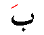
significa "una apertura". Consiste in una lineetta leggermente inclinata che si posiziona al di sopra della lettera, in tal modo suona come la vocale A.
La lettera Baa con la Fatha si pronuncia "BA"
Dhamma
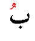
significa "una chiusura". Consiste in una piccola waw che si posiziona al di sopra della lettera, in tal modo suona come la vocale U.
La lettera Baa con la Damma si pronuncia "BU".
Kasra
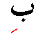
significa "uno stop". Consiste in una lineetta leggermente inclinata che si posiziona al di sotto della lettera, in tal modo suona come la vocale I.
La lettera Baa con la Kasra si pronuncia "BI"
Sukun
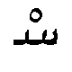
significa "Statico, Fermo". Consiste in un piccolo cerchio che si posiziona al di sopra, quando dopo la lettera, non deve essere pronunciato alcun suono
Come regola generale la prima lettera di una parola Araba non può avere il segno Sukun
harakat riassunto
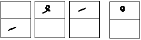
tanwin
È posizionato solo sopra o sotto l'ultima lettera di una parola
Fathatein
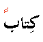
Consiste in una doppia Fatha e quindi inserita al di sopra della lettera, che in tal modo prende il suono di "AN".
Dammatein
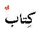
Consiste in una doppia Damma e quindi inserita al di sopra della lettera, che in tal modo prende il suono di "UN".
Kasratein
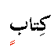
Consiste in una doppia Kasra e quindi inserita al di sotto della lettera, che in tal modo prende il suono di "IN" .
tanwin riassunto
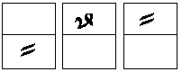
| Kasratein |
Dammatein |
Fathatein |
madda e shadda
Segni usati per il raddoppiamento
Madda
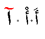
Consiste in un simbolo speciale inserito sopra la Alif che sostituisce due Alif consecutivi e origina un suono prolungato.
Shadda
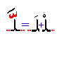
Consiste in un una piccola Sin in forma iniziale che s'inserisce sopra la lettera. La doppia viene scritta una sola volta con il simbolo Shadda.
Si usa quindi quando si presentano due lettere uguali consecutive.